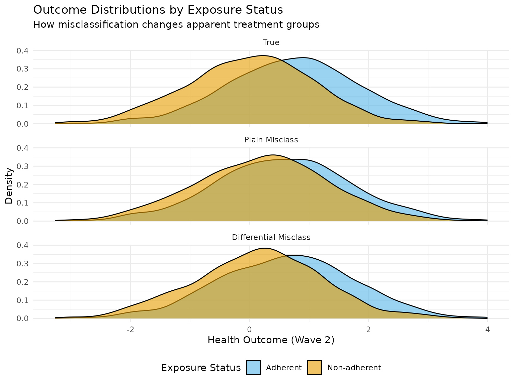
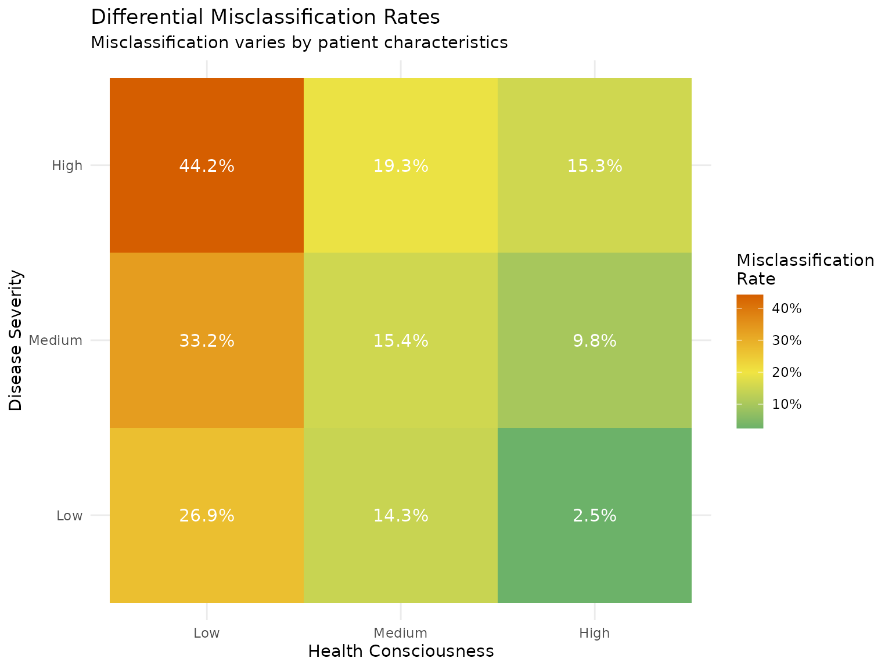
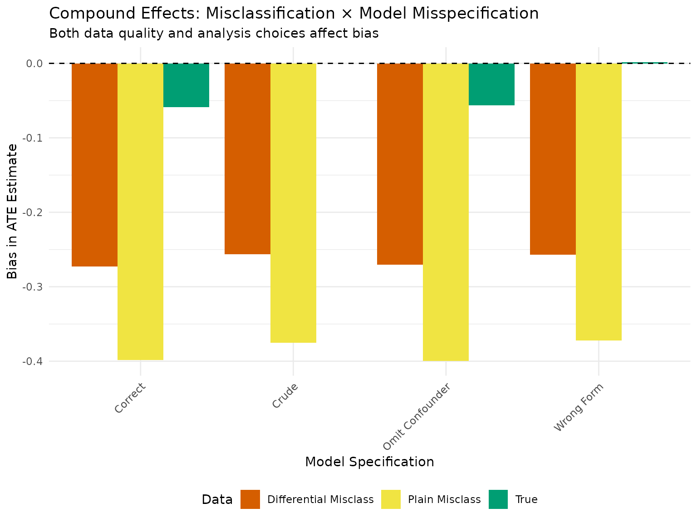
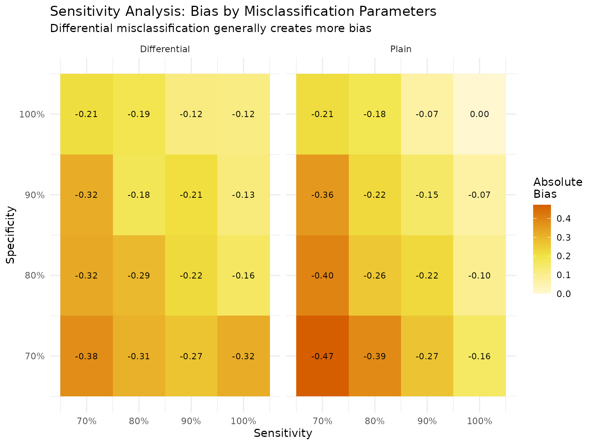

Misclassification Bias: When Binary Variables Are Measured with Error
Source:vignettes/misclassification-bias.Rmd
misclassification-bias.RmdIntroduction
Misclassification of exposure variables is a pervasive problem in observational research. This vignette demonstrates:
- Plain (non-differential) misclassification - errors occur randomly
- Differential misclassification - errors depend on other variables
- How differential misclassification typically creates more bias
- The distinction between data problems (misclassification) and analysis problems (model misspecification)
We’ll use a simple three-wave setup: - Wave 0: Baseline characteristics - Wave 1: Binary exposure (subject to misclassification) - Wave 2: Continuous outcome
Motivating Example: Medication Adherence Study
Consider a study examining whether medication adherence (binary: adherent/non-adherent) improves health outcomes. Self-reported adherence is often misclassified because:
- Some patients over-report adherence (social desirability)
- Memory errors occur randomly
- Patients with worse health may be more likely to misreport
Step 1: Generate True Data
First, let’s create data with a known causal structure:
set.seed(2025)
n <- 3000
# True causal parameters
params <- list(
# Baseline affects both exposure and outcome
b1_a_coef = 0.5, # Health consciousness → adherence
b2_a_coef = 0.3, # Socioeconomic status → adherence
b3_a_coef = -0.2, # Disease severity → adherence (sicker = less adherent)
# Exposure effect on outcome
a_lag_y_coef = 0.8, # True treatment effect (adherence improves health)
# Baseline effects on outcome
b1_y_coef = 0.3, # Health consciousness → health
b2_y_coef = 0.2, # SES → health
b3_y_coef = -0.6, # Disease severity → health
# Binary exposure
exposure_type = "binary"
)
# Generate true data
true_data <- margot_simulate(
n = n,
waves = 2,
params = params,
seed = 2025
)
# Add meaningful labels
true_data <- true_data %>%
mutate(
health_conscious = cut(b1, breaks = c(-Inf, -0.5, 0.5, Inf),
labels = c("Low", "Medium", "High")),
ses = cut(b2, breaks = c(-Inf, -0.5, 0.5, Inf),
labels = c("Low", "Medium", "High")),
disease_severity = cut(b3, breaks = c(-Inf, -0.5, 0.5, Inf),
labels = c("Low", "Medium", "High"))
)
# Check true exposure rates
exposure_summary <- true_data %>%
group_by(health_conscious) %>%
summarise(
n = n(),
adherence_rate = mean(t1_a),
mean_outcome = mean(t2_y),
.groups = "drop"
)
cat("=== True Exposure Rates by Health Consciousness ===\n")
#> === True Exposure Rates by Health Consciousness ===
print(exposure_summary)
#> # A tibble: 3 × 4
#> health_conscious n adherence_rate mean_outcome
#> <fct> <int> <dbl> <dbl>
#> 1 Low 914 0.488 0.0539
#> 2 Medium 1160 0.553 0.366
#> 3 High 926 0.587 0.797
# Calculate true ATE
true_ate <- mean(true_data$t2_y[true_data$t1_a == 1]) -
mean(true_data$t2_y[true_data$t1_a == 0])
cat("\nTrue ATE:", round(true_ate, 3), "\n")
#>
#> True ATE: 0.723Step 2: Apply Plain (Non-differential) Misclassification
Plain misclassification occurs randomly with fixed sensitivity and specificity:
# Create plain misclassification shadow
plain_misclass <- create_shadow(
type = "measurement_error",
params = list(
variables = "t1_a",
error_type = "misclassification",
sensitivity = 0.80, # 80% of true positives correctly classified
specificity = 0.80 # 80% of true negatives correctly classified
),
name = "plain_misclassification"
)
# Apply to create observed data
plain_data <- apply_shadow(true_data, plain_misclass)
# Check misclassification rates
misclass_table_plain <- table(
True = true_data$t1_a,
Observed = plain_data$t1_a
)
cat("\n=== Plain Misclassification Matrix ===\n")
#>
#> === Plain Misclassification Matrix ===
print(misclass_table_plain)
#> Observed
#> True 0 1
#> 0 1071 298
#> 1 337 1294
# Calculate observed rates
cat("\nSensitivity (observed):",
round(misclass_table_plain[2,2] / sum(misclass_table_plain[2,]), 3), "\n")
#>
#> Sensitivity (observed): 0.793
cat("Specificity (observed):",
round(misclass_table_plain[1,1] / sum(misclass_table_plain[1,]), 3), "\n")
#> Specificity (observed): 0.782
# Estimate ATE with misclassified exposure
plain_ate <- mean(plain_data$t2_y[plain_data$t1_a == 1]) -
mean(plain_data$t2_y[plain_data$t1_a == 0])
cat("\nEstimated ATE (plain misclassification):", round(plain_ate, 3), "\n")
#>
#> Estimated ATE (plain misclassification): 0.348
cat("Bias:", round(plain_ate - true_ate, 3), "\n")
#> Bias: -0.375
cat("Relative bias:", round(100 * (plain_ate - true_ate) / true_ate, 1), "%\n")
#> Relative bias: -51.9 %Step 3: Apply Differential Misclassification
Now let’s create differential misclassification where error rates depend on baseline characteristics:
# Function to create differential misclassification
apply_differential_misclassification <- function(data, base_sens = 0.80, base_spec = 0.80) {
observed_data <- data
# Calculate individual-specific error probabilities
# Less healthy conscious people more likely to over-report adherence
# Sicker people more likely to misreport (memory/cognitive issues)
# For true positives (sensitivity varies by characteristics)
true_positive_idx <- which(data$t1_a == 1)
sensitivity_individual <- base_sens +
0.15 * (data$b1[true_positive_idx] > 0) - # Higher if health conscious
0.10 * (data$b3[true_positive_idx] > 0) # Lower if sicker
sensitivity_individual <- pmax(0.5, pmin(0.95, sensitivity_individual))
# Apply misclassification to true positives
correctly_classified <- rbinom(length(true_positive_idx), 1, sensitivity_individual)
observed_data$t1_a[true_positive_idx] <- correctly_classified
# For true negatives (specificity varies by characteristics)
true_negative_idx <- which(data$t1_a == 0)
specificity_individual <- base_spec +
0.10 * (data$b1[true_negative_idx] > 0) - # Higher if health conscious
0.20 * (data$b1[true_negative_idx] < -0.5) # Much lower if not health conscious (over-report)
specificity_individual <- pmax(0.5, pmin(0.95, specificity_individual))
# Apply misclassification to true negatives
correctly_classified <- rbinom(length(true_negative_idx), 1, specificity_individual)
observed_data$t1_a[true_negative_idx] <- 1 - correctly_classified
# Track what changed
observed_data$t1_a_true <- data$t1_a
observed_data$misclassified <- (observed_data$t1_a != observed_data$t1_a_true)
return(observed_data)
}
# Apply differential misclassification
diff_data <- apply_differential_misclassification(true_data)
# Check misclassification patterns by group
diff_patterns <- diff_data %>%
group_by(health_conscious) %>%
summarise(
n = n(),
misclass_rate = mean(misclassified),
# Among true positives
sensitivity = sum(t1_a == 1 & t1_a_true == 1) / sum(t1_a_true == 1),
# Among true negatives
specificity = sum(t1_a == 0 & t1_a_true == 0) / sum(t1_a_true == 0),
.groups = "drop"
)
cat("\n=== Differential Misclassification by Health Consciousness ===\n")
#>
#> === Differential Misclassification by Health Consciousness ===
print(diff_patterns)
#> # A tibble: 3 × 5
#> health_conscious n misclass_rate sensitivity specificity
#> <fct> <int> <dbl> <dbl> <dbl>
#> 1 Low 914 0.328 0.726 0.620
#> 2 Medium 1160 0.162 0.828 0.850
#> 3 High 926 0.109 0.886 0.898
# Overall misclassification matrix
misclass_table_diff <- table(
True = diff_data$t1_a_true,
Observed = diff_data$t1_a
)
cat("\n=== Differential Misclassification Matrix ===\n")
#>
#> === Differential Misclassification Matrix ===
print(misclass_table_diff)
#> Observed
#> True 0 1
#> 0 1074 295
#> 1 294 1337
# Estimate ATE with differential misclassification
diff_ate <- mean(diff_data$t2_y[diff_data$t1_a == 1]) -
mean(diff_data$t2_y[diff_data$t1_a == 0])
cat("\nEstimated ATE (differential misclassification):", round(diff_ate, 3), "\n")
#>
#> Estimated ATE (differential misclassification): 0.467
cat("Bias:", round(diff_ate - true_ate, 3), "\n")
#> Bias: -0.256
cat("Relative bias:", round(100 * (diff_ate - true_ate) / true_ate, 1), "%\n")
#> Relative bias: -35.4 %Step 4: Visualize the Impact
# Compare distributions of treated/control by true and observed status
plot_data <- bind_rows(
true_data %>%
mutate(classification = "True", exposure = t1_a) %>%
select(classification, exposure, t2_y, health_conscious),
plain_data %>%
mutate(classification = "Plain Misclass", exposure = t1_a) %>%
select(classification, exposure, t2_y, health_conscious),
diff_data %>%
mutate(classification = "Differential Misclass", exposure = t1_a) %>%
select(classification, exposure, t2_y, health_conscious)
) %>%
mutate(
classification = factor(classification,
levels = c("True", "Plain Misclass", "Differential Misclass")),
exposure_label = ifelse(exposure == 1, "Adherent", "Non-adherent")
)
# Distribution plots
p1 <- ggplot(plot_data, aes(x = t2_y, fill = exposure_label)) +
geom_density(alpha = 0.6) +
facet_wrap(~ classification, ncol = 1) +
scale_fill_manual(values = c("Non-adherent" = "#E69F00", "Adherent" = "#56B4E9")) +
labs(
title = "Outcome Distributions by Exposure Status",
subtitle = "How misclassification changes apparent treatment groups",
x = "Health Outcome (Wave 2)",
y = "Density",
fill = "Exposure Status"
) +
theme_minimal() +
theme(legend.position = "bottom")
print(p1)
# Show how misclassification varies by characteristics
misclass_by_chars <- diff_data %>%
group_by(health_conscious, disease_severity) %>%
summarise(
n = n(),
true_exposed = mean(t1_a_true),
obs_exposed = mean(t1_a),
misclass_rate = mean(misclassified),
.groups = "drop"
) %>%
mutate(
exposure_diff = obs_exposed - true_exposed
)
p2 <- ggplot(misclass_by_chars,
aes(x = health_conscious, y = disease_severity, fill = misclass_rate)) +
geom_tile() +
geom_text(aes(label = sprintf("%.1f%%", misclass_rate * 100)),
color = "white", size = 4) +
scale_fill_gradient2(low = "#009E73", mid = "#F0E442", high = "#D55E00",
midpoint = 0.2,
labels = scales::percent) +
labs(
title = "Differential Misclassification Rates",
subtitle = "Misclassification varies by patient characteristics",
x = "Health Consciousness",
y = "Disease Severity",
fill = "Misclassification\nRate"
) +
theme_minimal()
print(p2)
Step 5: Model Misspecification vs Misclassification
Now let’s demonstrate how model misspecification interacts with misclassification:
# Function to estimate ATE with different model specifications
estimate_ate_models <- function(data, exposure_var = "t1_a", outcome_var = "t2_y") {
results <- list()
# 1. Correct model (adjusts for all confounders)
correct_model <- lm(as.formula(paste(outcome_var, "~", exposure_var, "+ b1 + b2 + b3")),
data = data)
results$correct <- coef(correct_model)[exposure_var]
# 2. Omitting important confounder (b3 - disease severity)
omit_model <- lm(as.formula(paste(outcome_var, "~", exposure_var, "+ b1 + b2")),
data = data)
results$omit_confounder <- coef(omit_model)[exposure_var]
# 3. Wrong functional form (assumes linear when may be non-linear)
wrong_form_model <- lm(as.formula(paste(outcome_var, "~", exposure_var, "+ I(b1^2) + I(b2^2) + I(b3^2)")),
data = data)
results$wrong_form <- coef(wrong_form_model)[exposure_var]
# 4. Unadjusted (crude)
crude_model <- lm(as.formula(paste(outcome_var, "~", exposure_var)),
data = data)
results$crude <- coef(crude_model)[exposure_var]
return(results)
}
# Apply to all three datasets
model_results <- list(
true = estimate_ate_models(true_data),
plain = estimate_ate_models(plain_data),
differential = estimate_ate_models(diff_data)
)
# Create comparison table
model_comparison <- expand.grid(
Data = c("True", "Plain Misclass", "Differential Misclass"),
Model = c("Correct", "Omit Confounder", "Wrong Form", "Crude"),
stringsAsFactors = FALSE
) %>%
mutate(
ATE_Estimate = NA,
Bias = NA
)
# Fill in results
for (i in 1:nrow(model_comparison)) {
data_type <- tolower(gsub(" Misclass", "", model_comparison$Data[i]))
model_type <- tolower(gsub(" ", "_", model_comparison$Model[i]))
if (data_type == "true") {
ate_est <- model_results$true[[model_type]]
} else if (data_type == "plain") {
ate_est <- model_results$plain[[model_type]]
} else {
ate_est <- model_results$differential[[model_type]]
}
model_comparison$ATE_Estimate[i] <- ate_est
model_comparison$Bias[i] <- ate_est - true_ate
}
cat("\n=== Model Misspecification × Misclassification Results ===\n")
#>
#> === Model Misspecification × Misclassification Results ===
print(model_comparison %>%
mutate(across(c(ATE_Estimate, Bias), ~round(., 3))) %>%
kable())
#>
#>
#> |Data |Model | ATE_Estimate| Bias|
#> |:---------------------|:---------------|------------:|------:|
#> |True |Correct | 0.665| -0.059|
#> |Plain Misclass |Correct | 0.325| -0.398|
#> |Differential Misclass |Correct | 0.451| -0.273|
#> |True |Omit Confounder | 0.667| -0.057|
#> |Plain Misclass |Omit Confounder | 0.324| -0.399|
#> |Differential Misclass |Omit Confounder | 0.453| -0.270|
#> |True |Wrong Form | 0.725| 0.002|
#> |Plain Misclass |Wrong Form | 0.351| -0.372|
#> |Differential Misclass |Wrong Form | 0.466| -0.257|
#> |True |Crude | 0.723| 0.000|
#> |Plain Misclass |Crude | 0.348| -0.375|
#> |Differential Misclass |Crude | 0.467| -0.256|
# Visualize the compound effects
p3 <- ggplot(model_comparison, aes(x = Model, y = Bias, fill = Data)) +
geom_bar(stat = "identity", position = "dodge") +
geom_hline(yintercept = 0, linetype = "dashed") +
scale_fill_manual(values = c("True" = "#009E73",
"Plain Misclass" = "#F0E442",
"Differential Misclass" = "#D55E00")) +
labs(
title = "Compound Effects: Misclassification × Model Misspecification",
subtitle = "Both data quality and analysis choices affect bias",
x = "Model Specification",
y = "Bias in ATE Estimate"
) +
theme_minimal() +
theme(axis.text.x = element_text(angle = 45, hjust = 1),
legend.position = "bottom")
print(p3)
Step 6: Sensitivity Analysis
Let’s examine how bias changes with different levels of misclassification:
# Function to calculate bias for different misclassification levels
misclass_sensitivity_analysis <- function(sens_range = seq(0.6, 1, 0.05),
spec_range = seq(0.6, 1, 0.05)) {
results <- expand.grid(
sensitivity = sens_range,
specificity = spec_range
) %>%
mutate(
plain_bias = NA,
diff_bias = NA
)
for (i in 1:nrow(results)) {
# Plain misclassification
plain_shadow <- create_shadow(
type = "measurement_error",
params = list(
variables = "t1_a",
error_type = "misclassification",
sensitivity = results$sensitivity[i],
specificity = results$specificity[i]
)
)
plain_temp <- apply_shadow(true_data, plain_shadow)
plain_ate_temp <- mean(plain_temp$t2_y[plain_temp$t1_a == 1]) -
mean(plain_temp$t2_y[plain_temp$t1_a == 0])
results$plain_bias[i] <- plain_ate_temp - true_ate
# Differential misclassification
diff_temp <- apply_differential_misclassification(
true_data,
base_sens = results$sensitivity[i],
base_spec = results$specificity[i]
)
diff_ate_temp <- mean(diff_temp$t2_y[diff_temp$t1_a == 1]) -
mean(diff_temp$t2_y[diff_temp$t1_a == 0])
results$diff_bias[i] <- diff_ate_temp - true_ate
}
return(results)
}
# Run sensitivity analysis
sens_results <- misclass_sensitivity_analysis(
sens_range = seq(0.7, 1, 0.1),
spec_range = seq(0.7, 1, 0.1)
)
# Plot heatmaps
p4_data <- sens_results %>%
pivot_longer(cols = c(plain_bias, diff_bias),
names_to = "type",
values_to = "bias") %>%
mutate(type = ifelse(type == "plain_bias", "Plain", "Differential"))
p4 <- ggplot(p4_data, aes(x = sensitivity, y = specificity, fill = abs(bias))) +
geom_tile() +
geom_text(aes(label = sprintf("%.2f", bias)), size = 3) +
facet_wrap(~ type) +
scale_fill_gradient2(low = "white", mid = "#F0E442", high = "#D55E00",
midpoint = 0.2) +
scale_x_continuous(labels = scales::percent) +
scale_y_continuous(labels = scales::percent) +
labs(
title = "Sensitivity Analysis: Bias by Misclassification Parameters",
subtitle = "Differential misclassification generally creates more bias",
x = "Sensitivity",
y = "Specificity",
fill = "Absolute\nBias"
) +
theme_minimal()
print(p4)
Practical Implications
Key Findings
- Plain misclassification attenuates effects toward the null (bias = -0.375)
- Differential misclassification can create larger and less predictable bias (bias = -0.256)
- Model misspecification compounds with misclassification - using the wrong model on misclassified data creates the largest bias
- The direction and magnitude of bias from differential
misclassification depends on:
- How misclassification relates to confounders
- The strength of confounding
- The true effect size
Recommendations
- Validation studies: When possible, validate self-reported measures against objective data
- Sensitivity analyses: Always examine how results change under different misclassification assumptions
- Consider the mechanism: Think about why misclassification occurs - is it likely to be differential?
- Multiple measures: Use multiple measures of exposure when available
- Appropriate models: Even with perfect measurement, model misspecification creates bias
Example: Correcting for Known Misclassification
If sensitivity and specificity are known from validation studies:
# Matrix method for bias correction (if sens/spec known)
correct_for_misclassification <- function(observed_effect, sensitivity, specificity,
p_exposed_obs) {
# This is a simplified correction assuming non-differential misclassification
# Based on: Greenland S. Basic methods for sensitivity analysis of biases.
# Int J Epidemiol. 1996;25(6):1107-16.
# Predictive values
ppv <- (sensitivity * p_exposed_obs) /
(sensitivity * p_exposed_obs + (1 - specificity) * (1 - p_exposed_obs))
npv <- (specificity * (1 - p_exposed_obs)) /
((1 - sensitivity) * p_exposed_obs + specificity * (1 - p_exposed_obs))
# Correction factor
correction_factor <- ppv + npv - 1
# Corrected effect
corrected_effect <- observed_effect / correction_factor
return(list(
observed = observed_effect,
corrected = corrected_effect,
correction_factor = correction_factor,
ppv = ppv,
npv = npv
))
}
# Apply correction to plain misclassification
p_exposed_obs <- mean(plain_data$t1_a)
correction_result <- correct_for_misclassification(
observed_effect = plain_ate,
sensitivity = 0.80,
specificity = 0.80,
p_exposed_obs = p_exposed_obs
)
cat("\n=== Bias Correction for Known Misclassification ===\n")
#>
#> === Bias Correction for Known Misclassification ===
cat("Observed ATE:", round(correction_result$observed, 3), "\n")
#> Observed ATE: 0.348
cat("Corrected ATE:", round(correction_result$corrected, 3), "\n")
#> Corrected ATE: 0.582
cat("True ATE:", round(true_ate, 3), "\n")
#> True ATE: 0.723
cat("Remaining bias after correction:",
round(correction_result$corrected - true_ate, 3), "\n")
#> Remaining bias after correction: -0.142Summary
This vignette demonstrated:
- Misclassification reduces statistical power and biases effect estimates
- Differential misclassification (when errors depend on other variables) typically creates more bias than plain misclassification
- Model misspecification and misclassification have compound effects - addressing only one source of bias is insufficient
- Sensitivity analyses are essential for understanding the robustness of findings
- Bias correction is possible when validation data provides estimates of sensitivity and specificity
The distinction between data problems (misclassification) and analysis problems (model misspecification) is crucial for understanding and addressing different sources of bias in observational research.